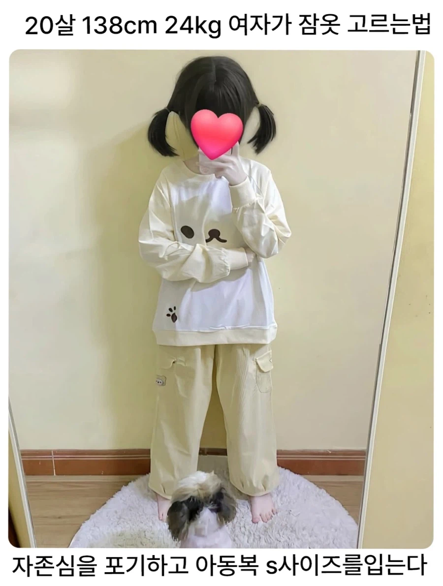
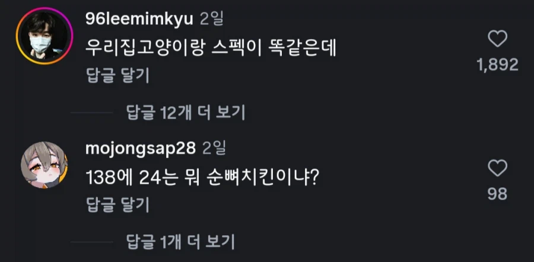

손가락이 저리 긴데 오른손 주먹 쥔건 쥐똥만하네
이거 중국쪽이 대부분이던데
놀숲이 대형 고양이인데 체중 평균 10kg를 못넘기는데.. 뭐를 키우는 거임?
치타가 24kg 쯤할텐데
치-타
손은 어른 손 비율이네
저렇게 키가 작아도 보통 머리크기는 성인크기라서 실제로 보면 개징그러울듯
ㄹㅇ 박을때 뼈다귀에다가 박는 느낌이겠네
아니지 심연의 죄책감 어딘가에 박는 느낌이지 않을까
아닌거 같은데 ㅋㅋㅋ
울애가 지금 6살에 키 112 몸무게 22키로인데 저 비중이 아닌데?
그리고 아동복s 사이즈는 모르겠는데 지금 130 입고 뎅겨
울애보다 20센치가 크면서 몸무게가 비슷하다면 진짜 뼈만 있어야된다는건데
성장기때 포동한 애기들이랑 성인이라 지방 좀 사라진 몸이랑 좀 다를수도 잇을거같긴함.
좆같다 그냥 씨발
손 색깔뭐냐....장갑 아닌거같은데
ai 같음
아니 피부 왜저렇게 하애
얼굴은 성인인데 키 한 80cm인 사람 어제 봤었는데 그런 분들도 다 왜소증인거임?
그 정도면 당연히 왜소증일듯
138cm는 있을수 있지만 그 키에 24kg가 말이 안되는데 7~8살 정도가 120cm 20kg인데 138에 그정도 나오려면..?
티리온이랑 비슷하네
ㅋㅋㅋㅋㅋㅋㅋㅋㅋㅋㅋ
138이면 군대도 면제받을듯
"너 혹시 뱀파이어니?"
보지 조임은 좋겠네 딱 섹파용
ㄹㅇ 노움이네
키빼몸 114
저렇게 비율이 정상적이면 다행인데
간혹 외소증인거 같으면서도 아닌거 같으면서도 애매한 중간위치인 사람들있던데
외소증인 사람들 손 발 보면 어린이 같은사람도 있는데
내가 말하고있는 사람들은 손 발 다 정상적인 어른손발 크기인데
상체 하체 비율이 5대5임 아는사람?
건강 엄청 안좋을 것 같다 저러면
저거 도용이다 이게 원본 실제 키가 138인지 뭔지 모름
https://www.tiktok.com/@t1euky
그러네 원본 가서 보니 그냥 140~150대 초반정도로 보임
오 열심히 찾다보니
도용의심 된다는 글 있긴하던데 역시나네 ㅋㅋ
도용의심 계정 X는 @qyuuuz
트릭컬임?
얘는 병원갈때 소아과가냐??
덩치에 비해 손이 큰거보니까 일단 성인이 맞는것 같긴하네
음 초딩이네 하고 내렸다가 다시 올렸음 ㅋㅋㅋ
20살이라고?
아시안게임 기계체조 금메달리스트 중에 17세에 135cm인 여고생이 있긴 했는데...
도용인데 찾아보니까? 사진은 11살짜리 맞음